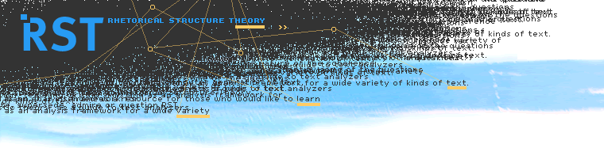
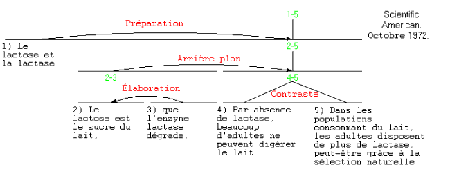
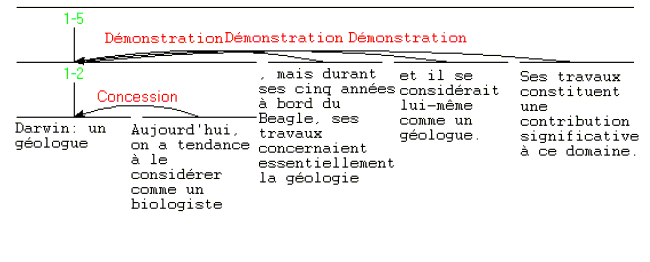

INTRODUCTION À LA THÉORIE DE LA STRUCTURE RHÉTORIQUE
|  |
|
INTRODUCTION À LA THÉORIE DE LA STRUCTURE RHÉTORIQUE (RHETORICAL STRUCTURE THEORY: RST) Historique La RST a initialement été conçue dans le cadre des études sur la génération automatique de texte. Une équipe de l'Institut des Sciences de l'Information (Information Sciences Institute) de l'Université de Californie du Sud travaillait sur la rédaction assistée par ordinateur (computer-based authoring). Vers 1983, certains membres de l'équipe (Bill Mann, Sandy Thompson et Christian Matthiessen) ont constaté qu'aucune théorie de la structure ou de la fonction du discours ne fournissait suffisamment de détails pour guider la programmation d'un système de génération. En réponse à cette lacune, la RST a été construite à partir d'études de textes élaborés (rédigés avec soin). A présent, elle a acquis au sein de la linguistique un statut indépendant de son utilisation informatique. Textes, Cohérence et Structure Dans l'usage courant, un texte présente une unité, généralement absente d'ensembles aléatoires de phrases. La RST propose une explication de la cohérence des textes. Mais qu'est-ce que la cohérence? On peut la formuler ainsi : la cohérence consiste en l'absence d'illogismes et de lacunes. C'est-à-dire que pour toute partie d'un texte cohérent, il existe une fonction, une raison plausible à sa présence, qui soit évidente pour les lecteurs, et par ailleurs, le lecteur n'a pas le sentiment que des parties manquent à l'ensemble. La RST se focalise sur le premier aspect — un rôle évident pour toute partie. Structures Le but de la RST est de décrire les textes,-plutôt que les processus qui sous-tendent leur création et leur interprétation. Elle postule un ensemble de possibilités de structures - divers types de "blocs de construction" dont on peut observer les occurrences dans les textes. Ces "blocs" se situent à deux niveaux, le principal ayant trait à la "nucléarité" et aux "relations" (souvent appelées relations de cohérence dans la littérature linguistique). On ne présentera pas ici le second niveau de structures, dénommées schémas . Les relations Noyau-Satellite Le pattern le plus fréquent : deux segments de texte (virtuellement toujours adjacents, mais il existe des exceptions) sont reliés de telle sorte que l'un d'eux joue un rôle spécifique par rapport à l'autre. Par exemple une affirmation suivie de la démonstration étayant cette affirmation. La RST postule une relation de "démonstration" entre les deux segments. Elle considère également que l'affirmation est plus essentielle pour le texte que la démonstration particulière, et marque cette préséance en dénommant le segment d'affirmation un noyau et le segment de démonstration un satellite. L'ordre des segments n'est pas déterminé, mais, pour toute relation, les ordres sont plus ou moins vraisemblables. On a identifié d'autres types, comparables, de paires:
Si une relation n'implique pas qu'un segment particulier soit plus central dans les intentions de l'auteur, on l'appelle Multinucléaire. Un exemple en est la relation neutre de Contraste.
Exemple de la Lactose Avec ces quelques relations, nous pouvons donner un exemple d'analyse de texte. Voici un titre et un résumé extraits du début d'un article du Scientific American. A fins d'analyse, le résumé a été segmenté en unités numérotées. 
Qu'est-ce qu'une analyse? Le processus d'analyse a pour but de fournir à une personne qui comprend le texte une méthode structurée, précise, pour déterminer une partie de ce qui sous-tend la compréhension. L'analyste (généralement appelé l'observateur dans les articles sur la RST) déclare que, de son point de vue, les deux premières unités (celles qui expliquent les termes lactose et lactase) ont pour but de faciliter la compréhension du reste du texte. Également, que l'unité 2) donne un détail supplémentaire sur le contenu (ou, plus généralement, la situation) présenté dans l'unité 1). Enfin, que les unités 3) et 4) sont en relation neutre de contraste. Chacune de ces observations est formulée en termes d'intention de l'auteur: ainsi, par exemple, l'intention de l'auteur est que le lecteur reconnaisse que les situations exprimées dans 3) et 4), identiques à plus d'un titre, diffèrent d'une manière que l'auteur souhaitait précisement formuler. Rien dans la RST n'oblige l'observateur à attribuer un rôle structurel à tout élément du texte. Néanmoins, pour les textes rédigés avec soin, à virtuellement tout texte correspond une analyse RST fournissant une place structurelle à tout élément du texte. (Parfois, en raison de la complexité du texte ou de son ambiguïté, l' observateur peut effectuer plus d'une analyse.) D'autres relations Voici un ensemble de relations (qui s'ajoutent à celles données ci-dessus.
En principe, l'inventaire des relations est ouvert, mais celui-ci, établi dans Mann & Thompson 1988 (le texte de référence sur la RST) s'est montré efficace dans maintes utilisations. Les relations Multinucléaires En plus de ces relations, les plus fréquentes, entre un noyau et un satellite, il existe des relations ne faisant pas intervenir cette distinction. Nous en avons vu un exemple, Contraste, plus haut. On les appelle les relations Multinucléaires.
Pour examiner d'autres exemples d'analyse RST : dans la liste des analyses non publiées, consultez celle intitulée "Sparky Lived!". Dans la liste des analyses publiées, consultez celle intitulée "It's not laziness". Cet article d'introduction fait appel aux autres exemples du site, ainsi qu'aux bibliographies. Observateurs et Définitions : Le but de la RST est de permettre l'analyse des textes. Il existe une convention graphique pour représenter les structures des textes, mais les interprétations de l'analyste peuvent être rendues explicites sur la base des définitions de relations et d'autres structures. Les analystes sont libres d'étendre l'inventaire des définitions si l'inventaire proposé est inadéquat. En quoi consiste une analyse? C'est un moyen symbolique grâce auquel un lecteur entraîné peut rendre compte de l'impression d'unité, de cohésion et de cohérence de textes écrits monologiques de telle sorte que l'analyse est constituée d'affirmations explicites. A chaque relation correspond une définition.Celle-ci détermine ce que le lecteur d'un texte doit considérer comme vrai afin d'établir cette relation entre deux segments lors de l'analyse de ce texte. Pour illustrer ceci, nous donnons ci-dessous la définition abrégée de la relation de "Condition". Elle illustre à la fois cette définition spécifique et la forme générale de toutes les définitions. Ces définitions ont pour but d'être appliquées de manière systématique par une personne, appelée observateur dans la RST.
Puisque l'effet n'est jamais absent, toute observation d'une relation impute une intention à l'auteur quant aux segments de textes joints par la relation. Dans une analyse donnant un rôle à tout segment, cette méthode revient à attribuer une intention, une raison à la présence de chaque élément du texte. Un observateur examine le texte et relève des combinaisons cohérentes de segments et de relations (et d'autres structures) qui englobent la totalité du texte. A un texte peut correspondre plus d'une analyse, que ce soit parce que l'observateur trouve une ambiguïté ou parce qu'il considère qu'une analyse non-déterministe rend mieux compte de l'intention de l'auteur. Souvent, une telle analyse ne formera pas un arbre, mais les analyses multiples sont plutôt rares. Les définitions abrégées sont destinées à clarifier le statut épistémologique des observations. Il faut néanmoins tenir à l'esprit que, pour chaque constatation de l'observateur, celui-ci déclare que "Il est plausible pour l'observateur qu'il était plausible pour l'auteur rédigeant le texte que la constatation est valable". Le principe qui a motivé l'organisation et le niveau de détail des définitions était d'assurer que le processus d'observation puisse toujours être mené à bien. Exemple de l'analyse de "Darwin", avec les affirmations Voivi un exemple d'analyse du résumé d'un article du Scientific American (Mai 1986), intitulé "Darwin : un géologue". A fins d'analyse, le résumé a été pré-divisé, sur une base syntaxique, en cinq unités (le titre étant considéré comme une unité). 1) Darwin : un géologue 2) Aujourd'hui, on a tendance à le considérer comme un biologiste, 3) mais durant ses cinq années à bord du Beagle , ses travaux concernaient essentiellement la géologie 4) et il se considérait lui-même comme géologue. 5) Ses travaux constituent une contribution significative à ce domaine. Le diagramme RST se présente comme ceci.  Affirmations de l'Observateur: Le tableau suivant présente les affirmations effectuées par l'observateur, qui établit la première relation de Démonstration dans l'exemple "Darwin".
Ces affirmations, ainsi que celles concernant les deux autres relations de Démonstration et de Concession, constituent un ensemble d'environ 16 affirmations. Elles sont pour l'essentiel équivalentes à celles fournies dans le diagramme. C'est la possibilité d'énumérer les affirmations spécifiques de l'analyse qui rend possible la comparaison des analyses de la RST avec celles d'autres approches, à condition bien sûr que celles-ci soient suffisamment explicites. La communication implicite, basée sur les relations rhétoriques Mis à part le caractère explicite de la tâche, la position de l'observateur ne diffère guère de celle du lecteur du texte. Les relations considérées comme plausibles par l'observateur le seront généralement aussi par le lecteur. Les relations, aussi bien que les propositions du texte, sont porteuses d'un contenu de communication. Par exemple, considérez l'idée que, parce que Darwin a contribué de façon significative à la géologie, on a la démonstration que Darwin était un géologue. La notion de démonstration, bien que nulle part explicitée dans le texte de l'exemple, est cependant transmise. Si l'on modifie le texte de telle manière qu'il infirme d'une manière ou d'une autre l'idée que cette contribution est la démonstration d'une telle fonction, on le rend alors incohérent, mais pas contradictoire. L'idée de démonstration, rendue de manière implicite, est une partie de ce qui est communiqué par le texte. Dans diverses études sur la RST, essentiellement de 1985 à 1992, on nommait ceci les " propositions relationnelles ." Cette communication implicite joue pour beaucoup dans la possibilité de "lire entre les lignes" : communément, en effet, une communication implicite se dégage de la lecture des textes. Résumé Parce que la RST fournit une analyse pour tout texte élaboré et cohérent, et parce qu'une telle analyse donne une explication argumentée de la raison pour laquelle chaque élément du texte y a été inclus par l'auteur, elle rend compte de la cohérence textuelle, d'une façon qui est indépendante des formes lexicales et grammaticales du texte. En spécifiant le rôle de l'observateur, elle fournit une base pour envisager la subjectivité ou l'objectivité de l'analyse. Elle fournit également une base fonctionnelle pour l'étude des formes spécifiques associées à la structuration discursive dans les textes, les "marqueurs du discours" et autres corrélats formels de la strucure discursive. La RST, en postulant l'existence d'une structure reliant les phrases entre elles, donne une base à l'étude fonctionnelle des combinaisons de propositions, et, plus généralement, des relations entre ces structures de discours et divers procédés de cohésion. Bibliographie Mann, W.C., & Thompson, S.A. 1988. Rhetorical Structure Theory : Toward a functional theory of text organization. Text, 8(3). 243-281.
|
|||||||||||||||||||||||||||||||||||||||||||||||||||||||||||||||||||||||||||||||||||||||||||||||||||||||||||||||||||||||||||||||||||||||||||||||||||
go to top ©2005-2025 William C. Mann, Maite Taboada. All rights reserved. |
||||||||||||||||||||||||||||||||||||||||||||||||||||||||||||||||||||||||||||||||||||||||||||||||||||||||||||||||||||||||||||||||||||||||||||||||||||